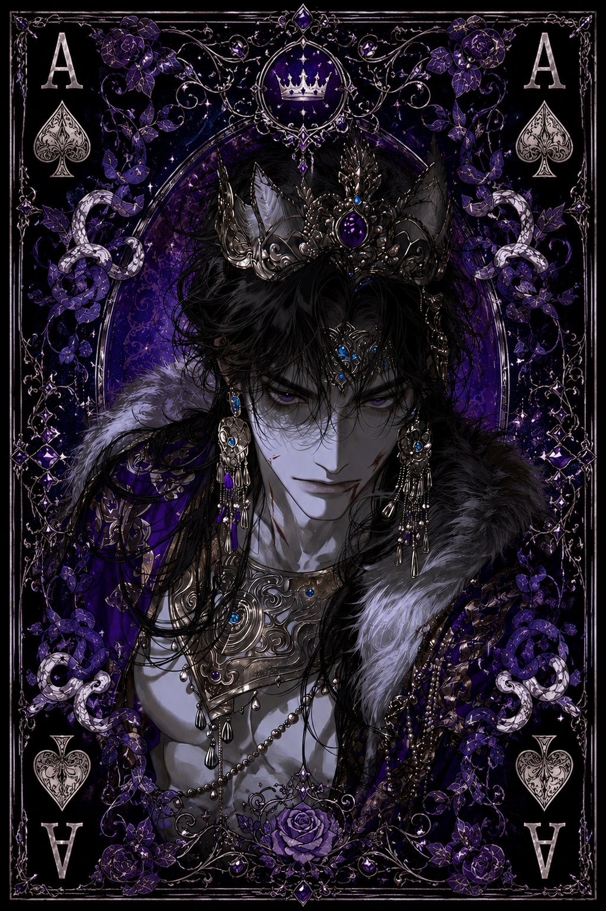

| Race | Dark Elf |
| Gender | Male |
| Age | 386 Years |
| Nation | Velmoris |
| Weapon | Royal Shadowblade |
| Magic | Umbral Magic |
Vaelith is the reigning king of Velmoris, a calculating tyrant whose overwhelming sense of superiority shapes nearly every aspect of his rule. He considers himself naturally above those around him and expects absolute obedience from both his subjects and the warriors who serve beneath his crown.
Unlike rulers who remain protected behind palace walls, Vaelith keeps his forces constantly prepared for conflict. His knights form a disciplined military force capable of mobilizing quickly whenever their king decides that Velmoris must strike. He is an exceptionally strategic ruler, preferring carefully planned attacks over reckless displays of strength.
Although formidable in combat and skilled in Umbral Magic, Vaelith's true danger comes from the authority and resources at his command. His Royal Shadowblade and magical abilities make him a capable opponent on his own, but confronting Vaelith also means confronting the military power of Velmoris. This combination has earned him a reputation as one of the more dangerous rulers within Eryndor.
Vaelith holds a particularly strong hatred toward dark mages, refusing to tolerate their presence within his domain. Whether negotiating with another nation or preparing his knights for battle, he approaches nearly every situation as a contest of control, always seeking to ensure that Velmoris—and above all, its king—stands in the superior position.